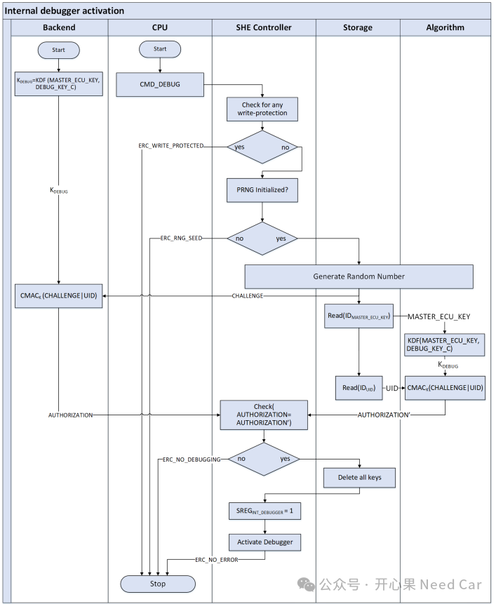

开心果 Need Car · 2025-08-18T06:26:00+08:00 · 微信原文
1、JTAG Password方案 VS CMD_DEBUG方案
相比于JTAG Password方案，CMD_DEBUG是用于激活SHE内部调试功能的命令。CMD_DEBUG会删除所有密钥，但保留SECRET_KEY、UID和 PRNG_SEED。它通常用于调试或将SHE恢复到出厂默认状态。
基于CMD_DEBUG命令，激活内部调试的流程如下所示：

（一）防止密钥泄露
CMD_DEBUG用于激活SHE内部调试功能的命令。调试模式可能会暴露内部寄存器、内存内容或执行路径。如果在调试状态下保留密钥，攻击者可能通过调试接口（如JTAG）提取密钥，从而破坏整个系统的安全性。
（二）满足安全设计原则
安全硬件设计中有一条基本原则：一旦进入调试模式，必须清除所有敏感数据。SHE遵循这一原则，仅保留SECRET_KEY（用于导入/导出密钥）、UID（唯一标识符）、PRNG_SEED（伪随机数种子）。
（三）调试 = 恢复出厂设置
CMD_DEBUG 实际上也可以被视为一种“恢复出厂设置”的机制。它允许开发者或芯片厂商在调试或故障分析时清空所有用户密钥，以便重新初始化SHE。
（四）防止绕过安全机制
CMD_DEBUG会忽略调试保护和安全启动保护标志，这意味着它可以在任何状态下执行。为了防止被恶意利用，执行该命令前必须通过挑战-响应认证，并且所有密钥不能处于写保护状态。
往期精彩回顾